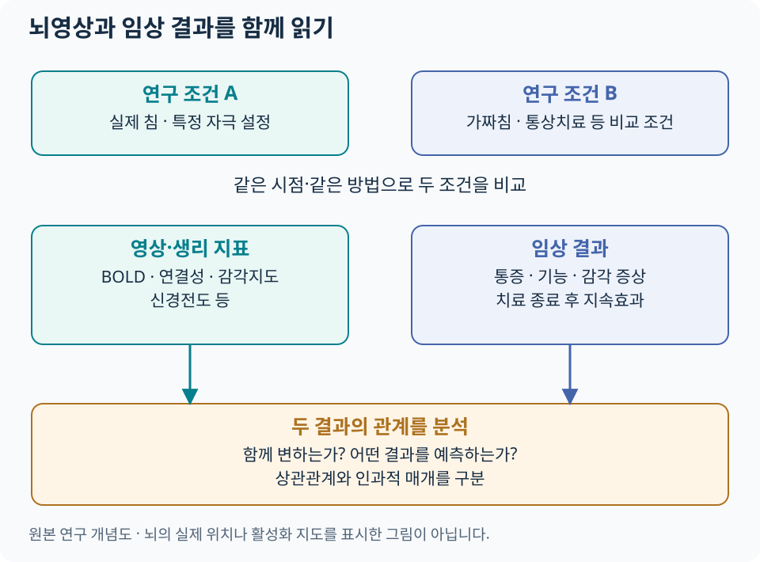

침과 뇌·중추신경계¶
뇌영상은 살아있는 사람에서 침 자극과 치료 전후의 신경계 변화를 탐색하는 방법입니다. 영상이 측정한 값, 비교한 조건, 환자의 임상 변화를 나누어 읽으면 연구의 의미를 더 정확하게 이해할 수 있습니다.
반복적으로 연구되는 뇌 영역¶
| 영역·네트워크 | 우리말·주요 기능 | 침 연구에서 보는 질문 |
|---|---|---|
| S1·S2 | 일차·이차 체성감각피질. 신체 감각의 위치·특성 처리 | 자극 부위의 감각 표현과 감각지도가 변하는가 |
| 시상(thalamus) | 여러 감각 입력과 피질 회로를 연결 | 감각 전달과 다른 영역의 상호작용이 달라지는가 |
| 섬엽(insula) | 신체 내부 감각·정서·중요성 평가에 참여 | 통증의 불쾌감·신체감각 처리와 관계가 있는가 |
| 앞대상피질(ACC) | 정서·주의·행동 조절에 참여 | 통증에 대한 반응과 조절이 어떻게 변하는가 |
| 전전두피질(PFC) | 기대·인지적 조절·의사결정에 참여 | 치료 맥락과 통증조절의 관계는 무엇인가 |
| PAG | 뇌간 하행성 통증조절에 참여 | 척수 통각 처리와의 연결이 달라지는가 |
| 기본모드 네트워크(DMN) | 내적 사고·자기 관련 처리 등에 참여 | 휴식 상태 네트워크와 지속 통증의 관계는 무엇인가 |
| 감각운동·전두두정 네트워크 | 감각·운동, 주의·인지 조절에 참여 | 기능과 감각 처리의 변화가 함께 나타나는가 |
영역의 기능은 서로 겹치며 통증에만 전용된 것은 아닙니다. 영상에서 한 영역의 차이가 관찰되었다는 사실만으로 환자의 통증이나 특정 심리 상태를 역으로 단정하지 않습니다. 네트워크 연구의 예는 2022년 좌표 기반 메타분석에서 확인할 수 있습니다.
뇌영상의 측정값 읽기¶

{kind=link}
| 용어 | 무엇을 뜻하나 | 해석에 필요한 구분 |
|---|---|---|
| BOLD fMRI | 혈중 산소화와 관련된 MRI 신호의 변화 | 신경발화를 직접 세는 값이 아닌 혈역학적 지표 |
| 과제 기반 fMRI | 특정 자극·동작 조건 사이의 신호 비교 | 비교 과제와 감각 강도·주의 조건을 확인 |
| 휴식상태 기능적 연결성(rsFC) | 영역 간 시간에 따른 신호 변동의 통계적 관계 | 해부학적 신경선의 연결이나 인과 방향을 직접 뜻하지 않음 |
| ALFF·fALFF | 저주파 BOLD 변동의 크기와 상대적 크기 | 활동의 한 측면을 수치화한 것으로 효과 크기와 구분 |
| ReHo | 가까운 지점들의 신호 변동이 얼마나 비슷한지 | 국소 신호의 동조성 지표이며 임상 회복 점수와 구분 |
| 구조 MRI·확산영상 | 구조·조직의 형태와 물 확산 특성 | 기능적 연결성과 서로 다른 측정 |
| PET | 추적자에 따른 대사·수용체 관련 신호 | 어떤 추적자와 분석을 썼는지 확인 |
BOLD의 생리적 배경은 Logothetis의 해설, 침 연구의 ALFF·ReHo 분석 예는 Yu 등의 메타분석을 참고합니다. 뇌영상은 이 분야에서 연구 도구로 사용되며, 일반 진료에서 개인의 침 효과를 판정하는 정규 검사로 확립된 것은 아닙니다.
사람 대상 원저: 손목터널증후군¶
Maeda 등의 2017년 Brain 연구는 손목터널증후군 환자 80명을 국소 침, 원위부 침, 가짜침군으로 무작위 배정하고 증상·정중신경 전도·S1 손가락 감각지도를 함께 평가했습니다.
| 관찰 | 결과를 읽는 방법 |
|---|---|
| 세 군 모두 증상 중증도 감소 | 환자 보고 증상은 대조군과의 차이를 함께 봄 |
| 실제 침군에서 가짜침보다 신경전도·감각지도 지표 개선 | 주관적 증상과 생리적 지표의 결과가 서로 다를 수 있음 |
| S1 감각지도 변화와 3개월 후 증상 개선의 관계 | 장기 반응을 예측하는 단서를 제시하지만 단독 원인 증명과는 구분 |
이 연구는 말초신경 질환에서도 중추 감각 표현을 함께 살펴볼 수 있음을 보여 줍니다. 모든 만성통증이나 모든 자침 부위에 동일한 결과를 적용하지 않고, 해당 환자군의 연구로 읽습니다. 원저: Maeda 등, 2017. 진료 내용은 손목터널증후군, 연구 비교는 질환 근거 카드로 이어집니다.
최신 만성통증 근거¶
| 연구 | 범위 | 관찰·해석 |
|---|---|---|
| Yu 등, 2022 — 좌표 기반 메타분석 | 14개 연구·만성통증 환자 524명 | ALFF·ReHo 변화의 공간적 분포를 종합. DMN·전두두정 네트워크와 관련된 변화 탐색 |
| Ma 등, 2026 — 체계적 문헌고찰·메타분석 | 17 RCT·750명 | 뇌영상 지표와 통증 결과를 함께 종합. 통증 유형·영상 방법·비교군의 차이와 짧은 추적기간을 고려 |
출처: Yu 등, 2022, Ma 등, 2026. 두 분석의 대상 문헌이 독립적이라고 보장할 수 없으므로 표본수를 합산하지 않습니다. 서로 다른 영상 지표의 변화량을 ‘뇌 기능 회복률’로 바꾸어 표현하지 않습니다.
해석¶
대조군과 치료 맥락¶
실제 침과 가짜침의 비교는 자극 위치·침투·감각 등의 차이를 살펴봅니다. 통상치료·대기군과의 비교는 치료를 추가했을 때의 전체적인 임상 차이를 묻습니다. 접촉·기대·주의·치료자와의 상호작용도 환자의 경험과 신경계 반응에 관여할 수 있으므로, 가짜침을 완전히 생리적으로 비활성인 조건이라고 가정하지 않습니다. 실제 사례는 위 손목터널 연구에서 볼 수 있습니다.
논문 그림과 결과표에서 확인할 것¶
- 어떤 비교인가? 치료 전후 변화인지, 무작위 배정한 군 사이의 변화량 차이인지 확인합니다.
- 무엇을 측정했나? BOLD·연결성·구조 지표를 구별하고 움직임·호흡 등 측정 영향을 확인합니다.
- 분석이 얼마나 안정적인가? 표본수, 사전 계획, 다중비교 보정, 독립 표본 재현을 봅니다.
- 환자에게 어떤 변화가 있었나? 통증·기능·지속효과와 영상 변화의 관계를 따로 읽습니다.
영상 변화와 통증 감소의 상관은 기전을 연구할 단서입니다. 그 변화가 치료 효과를 매개했다는 인과적 결론에는 추가적인 설계와 검증이 필요합니다. 척수·하행성 통증조절 · 근거 읽기 · 치료 경과 평가.